燃燒之血 Burning Blood
初始
在戰鬥結束時，回覆6點生命。
在戰鬥結束時，回覆6點生命。
當你的生命值低於或等於50%時，你額外獲得3點力量
有易傷狀態的敵人受到的傷害增加75%而非50%。
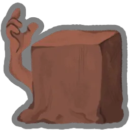
每當你在戰鬥中失去生命，就在下回合獲得3點格擋。
每當你消耗一張牌，對所有敵人造成3點傷害。
每回合第一次在回合內失去生命值時，回覆等量的生命值。
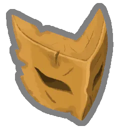
你在每場戰鬥中第一次獲得的力量值翻倍。
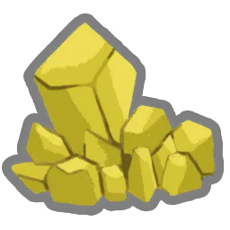
在你的每個回合開始時，你獲得2點力量，所有敵人獲得1點力量。
在每場戰鬥開始時，額外抽2張牌。
每當你給予敵人中毒時，所給予的中毒層數增加1層。
你每在你的回合丟棄一張牌，就對一名隨機敵人造成3點傷害。
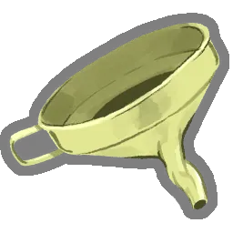
在每場戰鬥開始時，給予所有敵人4層中毒。
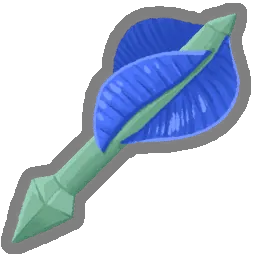
你每打出一張小刀，就在本回合獲得1點敏捷。
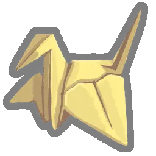
有虛弱狀態的敵人造成的傷害降低40%而非25%。
你每在你的回合丟棄一張牌，就獲得3點格擋。
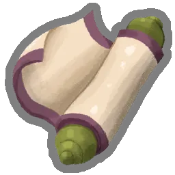
每場戰鬥開始時，將3張小刀加入你的手牌。
在每場戰鬥開始時，生成1個閃電充能球。
在每場戰鬥開始時，獲得1點集中。
你最右側的充能球會額外觸發一次被動效果。
在每場戰鬥開始時，生成1個黑暗充能球。
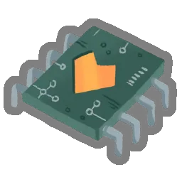
在每回合開始時，如果你在之前回合受到過傷害，則觸發所有充能球的被動效果。
每場戰鬥中你首次生成7個充能球時，對所有敵人造成30點傷害。
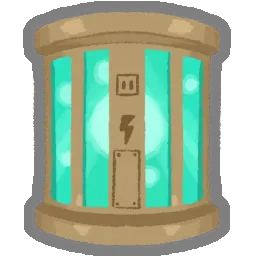
在每場戰鬥開始時，將2張耗能為0的卡牌從你的抽牌堆放入你的手牌。
每場戰鬥開始時，獲得3個額外充能球欄位。
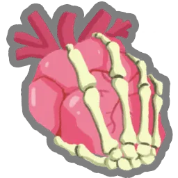
在你的回合開始時，召喚1
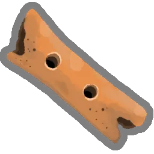
每當奧斯提攻擊時，獲得2點格擋。
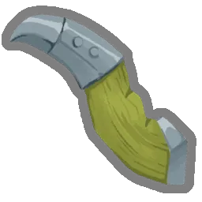
每當有一名不是“爪牙”的敵人死於災厄時，回覆3點生命。
在每場戰鬥開始時，將3張靈魂加入你的抽牌堆。
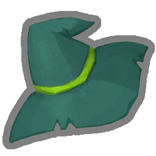
在每場戰鬥開始時，將2張隨機虛無牌加入你的手牌。
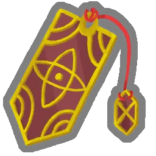
每回合結束時，隨機一張被保留的牌在被打出前的耗能減少1。
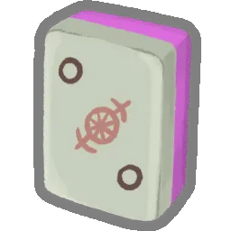
每當你打出一張耗能大於等於的牌時，獲得。
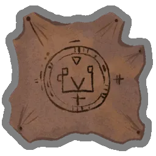
當敵人的災厄層數大於等於其生命值時，它造成的傷害降低50%。
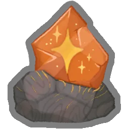
在每場戰鬥開始時，獲得。
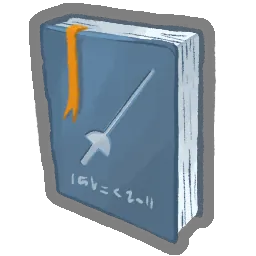
在每場戰鬥開始時，鑄造10。
每消耗10點，就獲得10格擋。
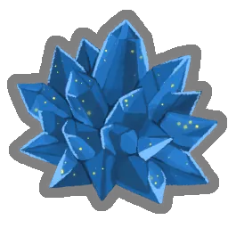
每當你生成一張牌時，獲得2點格擋。
在你的回合結束時，獲得。
每回合你第一次花費時，獲得1點力量。
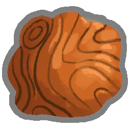
在每場戰鬥開始時，將2張隨機無色牌加入你的手牌。
名字中有“僕從”的卡牌造成雙倍的傷害與格擋。
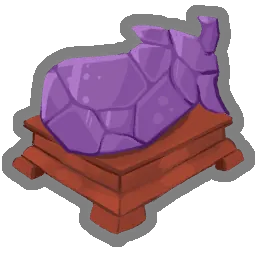
敵人額外掉落15金幣。
每場戰鬥開始時獲得10點格擋。
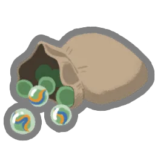
在每場戰鬥開始時，給予所有敵人1層易傷。
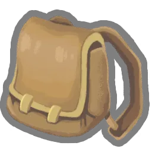
在每場戰鬥開始時，額外抽2張牌。
在每場戰鬥開始時，回覆2點生命。
你每將5張牌加入你的牌組時，回覆20點生命。
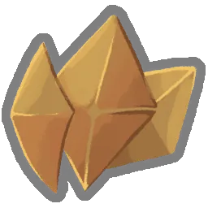
在每場戰鬥開始時，獲得3點荊棘。
你在每場戰鬥中第一次損失生命值時，抽3張牌。
在每場戰鬥開始時，對所有敵人造成9點傷害。
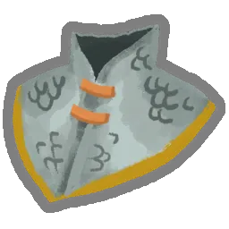
在每場戰鬥開始時，獲得4層覆甲。
每3個回合，獲得。
你在?房間中不會再遭遇常規戰鬥。
在每場戰鬥的第一回合獲得。
每當你進入商店房間時，回覆15點生命。
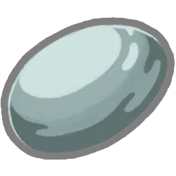
在每場戰鬥開始時，獲得1點敏捷。
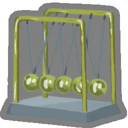
每3個回合，抽1張牌
拾起時，獲得2個藥水欄位。
在每場戰鬥開始時，給於所有敵人1層虛弱。
在休息時，額外回覆15點生命。
拾起時，將你的最大生命值提升7。
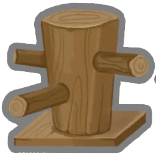
名字中有“打擊”的卡牌造成3點額外傷害。
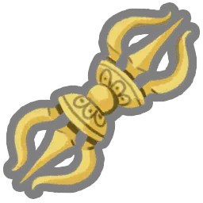
在每場戰鬥開始時，獲得1點力量。
到達休息處後的下一場戰鬥開始時額外獲得。
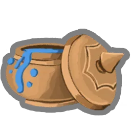
拾起時，隨機升級2張技能牌。
拾起時，隨機升級2張攻擊牌。
在每場戰鬥開始時，獲得8點活力。
額外獲得%的金幣。
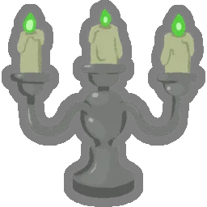
在你的第2回合開始時，獲得。
你的牌組中每有5張牌，當你進入休息處時就會回覆3點生命。
每當有一名敵人死亡時，獲得並抽1張牌。
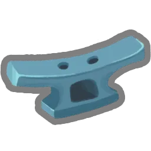
在你的第二回合開始時，獲得14點格擋。
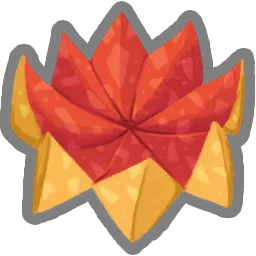
你每消耗5張牌，就抽1張牌。
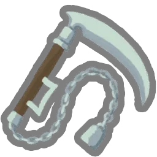
你每在同一回合內打出3張攻擊牌，就隨機對一名敵人造成6點傷害。
每兩場戰鬥，你的卡牌獎勵就會額外包含一張能力牌。
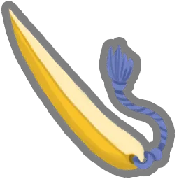
你每在同一回合內打出3張技能牌，就對所有敵人造成5點傷害。
每當你將一張卡牌加入你的牌組時，獲得15金幣。
在你的回合開始時，對所有敵人造成3點傷害。
升級的攻擊牌額外造成3點傷害。
你每打出10張攻擊牌，獲得。
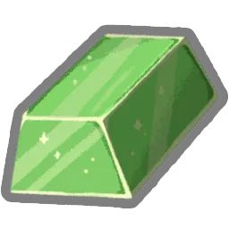
如果你在回合結束時沒有任何格擋，獲得6點格擋。
你每在同一回合內打出3張攻擊牌，就獲得4點格擋。
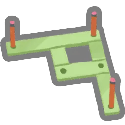
在Boss戰開始時，回覆25點生命值。
如果你在回合結束時擁有至少10點格擋，則對隨機敵人造成6點傷害。
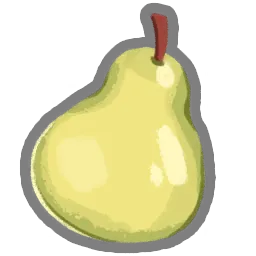
拾起時，將你的最大生命值提升10。
你每打出的第10張攻擊牌將會造成雙倍傷害。
當你在戰鬥中第一次打出能力牌時，獲得7點格擋。
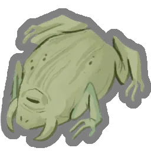
在每場戰鬥開始時，獲得一瓶藥水形狀的石頭
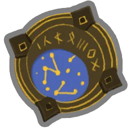
每當你進入？房間的時候，回覆5點生命。
當你使用藥水時，在本回合獲得3力量。
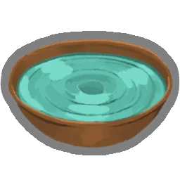
如果你在本回閤中沒有打出過攻擊牌，則獲得4點格擋。
在你的第3回合開始時，獲得1點力量和1點敏捷。
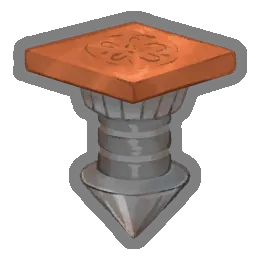
在每場戰鬥開始時，在本場戰鬥中隨機升級你抽牌堆中的2張牌。
每當你休息時，獲得2瓶隨機藥水。
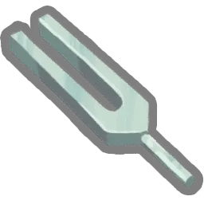
你每打出10張技能牌，獲得7點格擋。
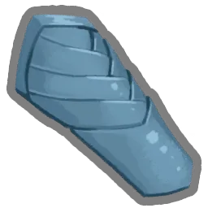
每場戰鬥中，你第一次從卡牌中獲得的格擋值翻倍。
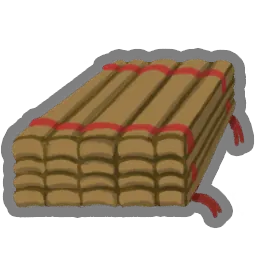
如果你在本回閤中沒有打出過攻擊牌，則在下一回合額外獲得1點。
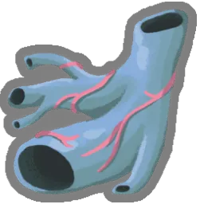
你在一回合內失去的生命值不會超過20點。
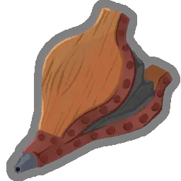
你在每場戰鬥開始時的手牌，將被升級。
在你的第三回合開始時，獲得18點格擋。
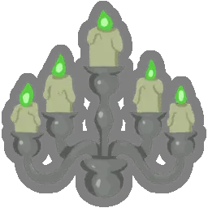
在你的第三回合開始時，獲得。
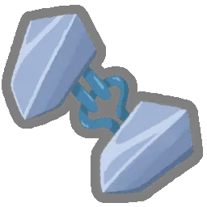
在你的回合結束時，每有一張手牌，就獲得1點格擋
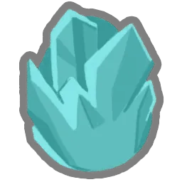
每當你獲得能力牌時，將其升級。
在每場戰鬥開始時，丟棄任意張牌，然後抽相同數量張牌。
每當你打出能力牌時，抽1張牌。
你現在能在休息處獲得力量。（最多3次）
多餘的能量可以留到下一回合。
每當你打出一張耗能大於等於的牌，獲得4點格擋。
你每在同一回合內打出3張攻擊牌，就獲得1點敏捷。
當你的生命值將要降低至0或以下時，回覆到最大生命值的50%（僅能起效一次）。
拾起時，將你的最大生命值提升14。
如果你在戰鬥結束時生命值等於或低於50%，回覆12點生命。
每當你獲得攻擊牌時，將其升級。
你每打出一張能力牌，手牌中就有一張隨機牌在這個回合可以免費打出。
拾起時，獲得300金幣。
當你在本回合打出的牌少於等於3張時，則在你的下個回合開始時額外抽3張牌。
普通敵人額外掉落一次卡牌獎勵。
每回合，你第一次打出攻擊牌、技能牌和能力牌各一張時，獲得1點力量和1點敏捷。
你打出攻擊牌和技能牌時，將其在本場戰鬥內升級。
現在你可以在休息處挖掘遺物。
你每在同一回合內打出3張攻擊牌，獲得1點力量。
在第7回合結束時，對所有敵人造成52點傷害。
可以跨回合保留最多10點格擋。
商人的卡牌、遺物和藥水不再會賣光，並且所有商品打折20%。
每當你獲得技能牌時，將其升級。
你每次失去生命時，減少失去的生命值1點。
在你的回合，當你沒有手牌時，抽一張牌。
你在每場戰鬥中第一次打出能給予敵人負面狀態的牌時，將其效果翻倍。
在每場戰鬥開始時，將一張隨機卡牌加入你的手牌。這張牌在本回合可以免費打出。
戰鬥結束後必定掉落藥水。
精英敵人額外掉落一次稀有卡牌獎勵。

拾起時，將你的最大生命值提升31。

在每場戰鬥的第一回合額外獲得。
當你沒有藥水時，你額外擁有2點敏捷。
在你的第一個回合開始時，失去。在其餘的回合開始時，獲得。
每場戰鬥中你第一次消耗技能牌時，將那張牌的複製品加入你的手牌
拾起時，製作5瓶隨機藥水。
耗能為X的牌的效果數值增加2點。
卡牌獎勵現在會包括無色牌。
拾起時，從你的牌組中選擇一張牌進行復制。
每當你獲得金幣時，提升1點你的最大生命值。
打擊和防禦獲得虛無。
拾起時，從你的牌組中選擇至多3張攻擊牌，附魔：鋒利3。
拾起時，從你的牌組中選擇至多3張牌，附魔：伶俐。
在戰鬥結束時，如果你沒有受到傷害，則升級你的所有卡牌獎勵。
拾起時，將你的最大生命值提升7點，並回復所有生命。
所有商品打折50%！
你可以在休息處選擇任意數量的選項。
有附魔的攻擊牌額外造成9點傷害。
拾起時，獲得5次卡牌獎勵
拾起時，選擇一張攻擊牌為它附魔：動量5。
在每場戰鬥的第一回合保留你的手牌。
拾起時，從牌組中選擇一張攻擊牌或技能牌，為它附魔：王室認證。
如果你在回合結束時沒有任何手牌，則對所有敵人造成20點傷害。
在與精英敵人戰鬥時，獲得2點力量。
你每次將抽牌堆洗牌時，獲得6點格擋。
在每場戰鬥開始時，從3張隨機無色牌中選擇1張加入你的手牌。
每次卡牌獎勵中，都會有隨機一張牌被附魔：迅捷1。
每當你將一張帶有格擋的牌加入你的牌組時，為那張牌附魔：靈巧2
在戰鬥結束時，回覆12點生命。
在每場戰鬥開始時，獲得。
在每場戰鬥開始時，生成3個閃電充能球。閃電充能球額外造成1點傷害。
在每場戰鬥開始時，召喚5。在你的回合開始時，召喚2。
在戰鬥開始時的前3個回合，你額外抽2張牌。

拾起時，獲得4個放有隨機藥水的藥水欄位。

拾起時，將一張隨機稀有牌加入你的牌組。

拾起時，將一張初始卡牌變化為先古版本。

拾起時，選擇3張牌進行變化，然後將這些牌升級。

拾起時，從你的牌組中選擇3張牌，附魔：迅捷3。

拾起時，從你的牌組中移除4張牌。每當你的抽牌堆打亂洗牌時，將一張煤灰加入你的抽牌堆。

精英敵人在被打敗時多掉落一件遺物。

在每回合開始時獲得。在戰鬥開始時，將3張暈眩放入你的抽牌堆。

拾起時，將1張執迷加入你的牌組。在回合開始時獲得。

在精英戰的戰鬥開始時，額外抽2張牌並獲得。

你每回合從你的手牌打出的第5張牌可以被免費打出。

拾起時，獲得一個獨特的詛咒和3件遺物。

在每場戰鬥開始時，從5張隨機牌中選擇1張放入你的手牌。被選中的牌獲得保留。

拾起時，將至多6張牌變化為撕咬。

在你的回合開始時，將一張隨機攻擊牌加入你的手牌。這張牌在本回合可以免費打出。

拾起時，獲得一張貪婪，獲得333金幣。

在每場戰鬥開始時，用隨機藥水將你的空藥水欄位填滿。

如果你在本回合打出的牌少於等於2張，則受到敵人的傷害減半。

拾起時，失去9點最大生命值。將3張靈體加入你的牌組。

你可以在每一個卡牌獎勵中重擲一次。

拾起時，獲得一張先古牌。
你不能再獲得任何金幣。在回合開始時獲得

拾起時，選擇一張技能牌為它附魔：注能。
拾起時，選擇移除牌組中的2張牌。

在每個回合開始時，額外抽2張牌。你在回合進行中不再能抽任何牌。

每3場普通戰鬥，隨機升級你牌組中的一張牌。

拾起時，隨機標記7處戰鬥。這些戰鬥中的敵人將只有1點生命。

拾起時，獲得2組普通、2組罕見、和1組稀有卡牌獎勵。

為之後的所有卡牌獎勵附魔：華彩。

拾起時，將第2階段的地圖替換為一條特殊的直道。

拾起時，獲得150金幣。

拾起時，從3張稀有牌中選擇1張加入你的牌組，同時將1張受傷加入你的牌組。

你每打出4張牌，就抽1張牌。

在每場戰鬥開始時，將一張隨機能力牌從你的抽牌堆放入你的手牌，這張牌在本場戰鬥可以免費打出。

拾起時，將1張神化加入你的牌組。

拾起時，獲得2次來自其他角色的卡牌獎勵。

拾起時，獲得2件隨機遺物。額外將一對打擊和防禦，加入你的牌組。

第一階段的Boss敵人額外掉落2件遺物。

拾起時，從2張無色牌中選擇1張加入你的牌組。

拾起時，變化你的1張打擊和1張防禦，然後失去12點最大生命。

當你遇見商人時，立刻獲得他所出售的所有物品。

拾起時，獲得1次卡牌獎勵和1瓶隨機藥水。

拾起時，從3張多人遊戲牌中選擇1張加入你的牌組。

你可以在休息處進行烹飪。

將你每回合打出的第一張攻擊牌的一張虛無複製品加入你的手牌。

拾起時，獲得2件隨機涅奧遺物。將1張隨機詛咒加入你的牌組。

拾起時，升級你的1張打擊和1張防禦。

拾起時，將1張涅奧之怒加入你的牌組。

拾起時，變化1張牌。

拾起時，將你的最大生命值提升11。

拾起時，為你牌組中的所有“打擊”附魔：特茲卡塔拉的餘燼

在你的回合開始時，額外抽1張牌

拾起時，為所有的“防禦”附魔：黏糊。

你在每場戰鬥中第一次沒有打出任何牌就結束回合時，消耗所有手牌然後進行一個額外回合。

從你的第3回合開始，在回合開始時額外獲得。

拾起時，從牌組中選擇一張牌，為其附魔：克隆。

拾起時，將2張放鬆加入你的牌組。

將你從一張卡牌中獲得的格擋翻倍，然後此遺物會休眠2回合。

如果你在擁有未花費的情況下結束回合，則下個回合額外獲得。

拾起時，從你的牌組中選擇5張牌移除。在每場戰鬥結束時，將其中隨機1張牌升級然後返還。

你可以將你的卡牌獎勵獻祭給佩爾。每獻祭2次，就能獲得一件遺物。

變化所有“打擊”和“防禦”。

拾起時，獲得1個藥水欄位並獲得2瓶隨機藥水。
在每回合開始時獲得。所有敵人初始獲得1點力量。

拾起時，升級一張牌。

拾起時，從你的牌組中移除2張牌並失去16點生命。

拾起時，從你的牌組中移除1張牌。

拾起時，從你的牌組中移除3張牌。將一張愚行加入你的牌組。

在每個回合開始時獲得。卡牌獎勵現在會包含其他顏色的卡牌。

在每個回合開始時獲得。這件遺物會在5場戰鬥後熄滅。可以在休息處為其添火。

在每場戰鬥開始時，將1張冷光加入你的手牌。

你在回合結束時不再自動丟棄所有手牌。

在你的回合開始時，獲得7點格擋。

拾起時，隨機升級6張牌。

拾起時，從2個卡牌包中選擇1包加入你的牌組。

在你的回合開始時，花費5金幣來獲得。

查看15張來自其他角色的牌。從中選擇任意數量的卡牌加入你的牌組。

拾起時，將2張隨機詛咒牌和3張許願加入你的牌組。

拾起時，獲得999金幣。

拾起時，失去所有金幣。為第一次卡牌獎勵中的所有牌附魔：華彩。

你遇到的前3次卡牌獎勵將是被升級過的。你打開的第一個寶箱將是空的

拾起時，獲得一件隨機遺物。

每回合多抽2張牌。每場戰鬥開始時獲得混亂效果。
你無法再獲得藥水。在每回合開始時獲得。

在每回合開始時獲得。能力牌的耗能增加1。

每當你在休息處休息時，將你的最大生命值提升5點。

拾起時，將1張至亮之焰添加到你的牌組中。

拾起時，將1張吹哨加入你的牌組。

你在每場戰鬥中打出的第一張牌會多打出一次。

在你的回合開始時，消耗你抽牌堆頂部的牌並獲得1點力量。

拾起時，將你的初始遺物替換為先古版本。

拾起時，獲得4件蠟制遺物。每經過3場戰鬥，你最左側的蠟制遺物將會融化。

從你的牌組中選擇3張攻擊牌。為這些牌附魔：本能。
在每回合開始時獲得。你每回合不能打出超過6張牌。

每當你擊敗一名精英敵人的時候，隨機升級4張牌。

在每個回合開始時，獲得。瓦庫將接管你的第一回合。

你在選擇下一層的房間時有3次機會可以無視當前的路線。

拾起時，升級4張牌。
拾起時，將你的最大生命值提升20。在每場戰鬥開始時，少抽2張牌。
每當你往牌組中增添卡牌時，都將額外添加一張相同的牌。
在你接下來的1場戰鬥開始時，升級你的初始手牌。
拾起時，獲得一張異鳥撲擊。一隻幼年異鳥會在戰鬥中陪伴你。
在戰鬥結束時，獲得1點最大生命值。

每當你獲得一張詛咒，就將你的最大生命值提升6。
每當你打出一張攻擊牌時，獲得1點格擋。

每當你休息時，可以添加一張牌到你的牌組。
在接下來的5場戰鬥開始時，獲得2點力量。
在每場戰鬥開始時，獲得4點格擋。
在每場戰鬥開始時，回覆1點生命。
每5個回合，獲得。
拾起時，回覆你10%的生命值。
拾起時，將你的最大生命值提升3。
低劣的仿製品。沒有任何作用。
如果你在回合結束時沒有任何格擋，獲得3點格擋。
每場戰鬥開始時獲得混亂效果。
名字中有“打擊”的卡牌造成1點額外傷害。
到達休息處後的下一場戰鬥開始時額外獲得。
每當你消耗一張牌，隨機對一名敵人造成1點傷害。
拾起時，失去15點生命，然後隨機升級2張牌。

每當你突破敵人的格擋時，給予其2層易傷。
在你的回合開始時，打出一張你上一回合最後打出的攻擊牌或技能牌的複製品。
你每打出一張能力牌，就對所有敵人造成8點傷害。

每攀爬一層樓層，就獲得12金幣。一旦在商店中花費金幣就會使其失效。
在你的回合開始時，對所有敵人造成等量於當前回合數的傷害。
每4個回合，額外抽2張牌。
在每場戰鬥開始時，失去4點生命。
在每場戰鬥開始時，獲得3點力量。
在擊敗5名精英敵人之後將變化為一件強力遺物。
在下一場戰鬥開始時，將2張暈眩放入你的抽牌堆。

每當你造成小於等於4點未被格擋的攻擊傷害時，將傷害提升為5。
在5場戰鬥後，獲得隨機3件遺物。
沒有任何作用。
這是一個頭環。
沒有符合條件的內容。